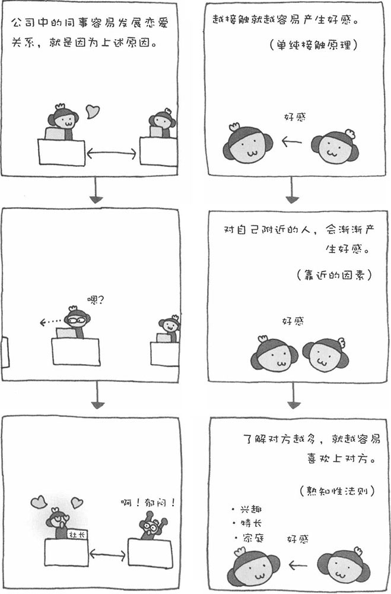

在第二章中，我们已经讲过私人空间的问题。私人空间对我们来说是一种非常主观的存在。我们不愿让自己不喜欢的人进入这个空间，但期待自己喜欢的异性进入自己的私人空间。
不过，人是一种非常有趣的动物。即使我们对对方（异性）完全不感兴趣，但是如果对方在自己的私人空间中存在很长时间，我们也会渐渐对其产生好感。在心理学上，这叫做"单纯接触原理"。如果对方与自己比较靠近，时间长了我们也会对其产生好感。这叫做"靠近的因素"。比如，在学校或者公司，同学或同事的座位都是固定的，时间长了，人就容易对离自己比较近的异性产生好感。再者，相互了解也有助于增加好感。这叫做"熟知性法则"。以上三种心理效应，可谓是恋爱的"王道"。
然而，如果对方的拒绝反应非常强烈，以上的效果就可能演变成反作用。虽然说刚遭到拒绝的时候，我们尽量接近对方也许能让对方改变想法。可是，如果一味死缠不放，也许只会令对方产生厌恶心理。
如果一对恋人天各一方，又不能经常见面，彼此的感情就会逐渐变淡。男女间的物理距离太大也可以导致心理距离的疏远。可以说，距离是爱情的头号敌人。心理学上将其称之为"博萨德法则"，我们称其为"爱情与距离成反比法则"。美国心理学家博萨德曾经对5000对已经订婚的情侣进行调查，结果发现其中两地分居的情侣最终结婚的比例很低。在罗密欧与朱丽叶效应中，障碍反倒能加深恋人之间的感情。然而，距离对于爱情来说，似乎是一道无法逾越的障碍。
